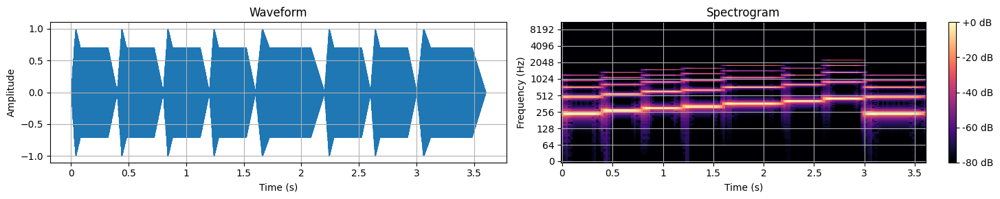

We have utilized Colab to build a user-friendly web-based interactive platform.
The first set of experiments begins with a fundamental sine function and explores multiple attributes with interactive sliders.It includes fundamental notes ("swaras"), ragas, taals, visual representations of ADSR Envelopes, and harmonics to enrich the musical experience, providing an engaging platform for students to explore signal processing in music and thus create a melody. The visualization is shown below:

The next set of experiments enhances user's musical understanding and engagement by detecting various attributes from a melody. These experiments include audio visualization, rhythmic and harmonic separation, tempo, and beat detection tools, facilitating a deeper exploration of musical elements. The visualization is shown below.


Utilizing digital signal processors as pedagogical tools holds immense promise in enhancing the
comprehension of music theory concepts. DSPs offer a dynamic platform to elucidate the intricate
interplay between diverse waveforms, harmonics, and frequencies within the context of musical notes.
The TMS320C6713 stands out with its advanced peripherals, contributing to efficient audio processing capabilities.
The unified cache configuration minimizes memory conflicts and optimizes overall memory usage.
Its seamless audio processing capabilities make it particularly valuable for innovative educational
approaches. These attributes open doors for enhanced music education and hold the potential to drive
advancements in audio processing techniques and technologies.
We have effectively used TMS320C6713 for three music information retrieval tasks in Indian classical
music: tonic identification, swara and raga recognition.